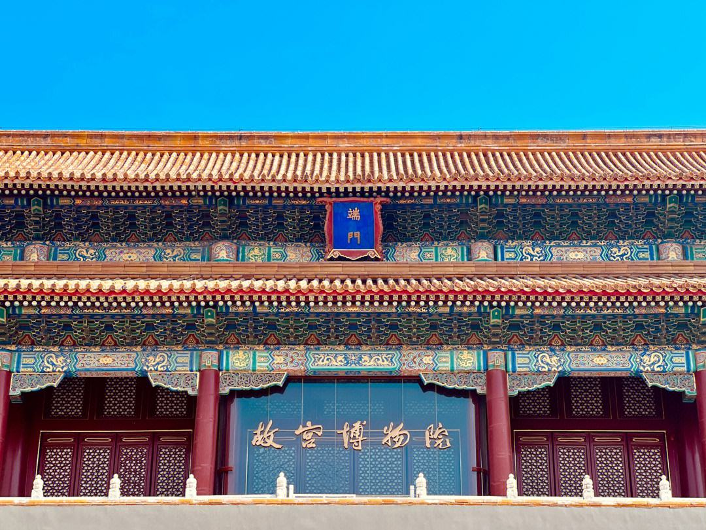

中国故宫博物院
北京故宫博物院，是一座综合性博物馆，成立于1925年10月10日，是在明清皇宫及其收藏基础上建立起来的大型综合性古代艺术博物馆。也是中国最大的古代文化艺术博物馆。
故宫于1961年被国务院列为第一批全国重点文物保护单位，1987年被联合国教科文组织列入“世界遗产名录”，被誉为“世界五大宫之首”。 故宫博物院于2007年被评为国家5A级旅游景区，2008年被评为首批国家一级博物馆。 还是第一批全国爱国主义教育示范基地、全国未成年人思想道德建设工作先进单位。

故宫博物院占地100余万平方米，保存古建筑约9000间，是中国现存规模最大、保存最完整的古代宫殿建筑群。故宫的前身是明清皇宫紫禁城，于明永乐十八年（1420年）建成，明清两代共有24位皇帝居住于此。1912年溥仪退位后，紫禁城作为皇宫的历史就此终结。1914年，于外朝区域成立古物陈列所；1925年，于内廷区域成立故宫博物院；1948年，古物陈列所并入故宫博物院。故宫博物院院藏文物体系完备，现有藏品总量186万余件（套），依据不同质地和形式，可分为绘画、法书、碑帖、铜器、金银器等25大类，其中珍贵文物占藏品总数的90%。故宫博物院通过明清皇家宫殿建筑，宫廷史迹原状陈列，珍宝、钟表、书画、陶瓷、雕塑等艺术藏品常设展览，以及临时特展等多种方式向公众展现悠久灿烂的中华文明。